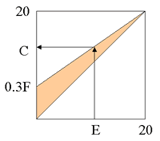

|
Curso: Licenciatura em Engenharia
Informática e Computação
Ano lectivo: 2003/2004
Ano: 2º ano, 2º semestre
Escolaridade: 3 horas de aula teórica + 1 hora de
aula teórico-prática por semana
Página
no SiFEUP, Página
oficial 2002/2003, Página
das ATP 2002/2003
|
| Docentes |
| Aulas teóricas |
| Francisco José
de Oliveira Restivo, Professor Associado |
| Aulas teórico-práticas |
|
Francisco José de
Oliveira Restivo, Professor Associado
Rui
Carlos Camacho de Sousa Ferreira da Silva, Professor Auxiliar
|
|
Classificações! |
| Objectivos |
| Os alunos devem adquirir competências
de rigor no raciocínio, através do estudo da lógica matemática e
das suas ligações à computação. Devem tornar-se capazes de formalizar
uma argumentação e aplicar técnicas de demonstração de teoremas
em lógica de 1ª ordem. Devem ainda compreender algumas aplicações
da lógica, nomeadamente à teoria dos conjuntos e à programação em
lógica. |
| Programa |
Lógica proposicional. Frases atómicas. Conectivas
booleanas. Métodos de prova. Provas Formais. Condicionais
Lógica de 1ª ordem. Quantificadores. Tradução de linguagem natural.
Formas normais. Métodos de prova. Provas formais.
Aplicações de Lógica de 1ª Ordem. Teoria de Conjuntos. Indução.
Alguns tópicos avançados. Cláusulas de Horn e sua
satisfação. Resolução proposicional. Estruturas de 1ª ordem. Resolução.
Completude e incompletude na Lógica de 1ª Ordem. |
| Metodo de ensino |
| Aulas teóricas |
| As aulas teóricas são usadas para exposição formal
da matéria, acompanhada da apresentação de exemplos e sua discussão.
Ao longo do semestre são realizados dois mini-testes com o objectivo
de testar se os conceitos básicos estão a ser apreendidos pela generalidade
dos alunos. |
| Aulas teórico-práticas |
| Nas aulas teórico-práticas são
propostos exercícios a realizar com o apoio do software disponibilizado
no CD incluído no livro de texto recomendado, em particular as aplicações
Tarski's World 5.1, Boole 1.1 e Fitch 1.1. |
| Método de avaliação |
A avaliação é distribuída
com exame final, nos termos das normas gerais de avaliação
em vigor.
Componentes de Avaliação: dois minitestes, sem consulta, e exame
final, com consulta. |
| Mini-testes |
| Os mini-testes serão
realizados em 2 de Abril e 28 de Maio de 2004.. |
| Frequência |
| Avaliação distribuída (média dos dois minitestes)
não inferior a 6. |
| Classificação |
|
O exame final consta de uma prova escrita
com a duração de 2 horas.
A classificação final (C) será obtida
adicionando à classificação da prova escrita
(E) um bónus de acordo com a classificação
de frequência
C = E + 0.3F(1 - 0.05E).
O bónus varia entre 0 e 6 valores,
conforme a figura ao lado ilustra.
|
 |
| Melhoria de classificação |
| A melhoria de classificação realiza-se
segundo os mesmos moldes da classificação final. A
classificação de frequência não é
susceptível de melhoria. |
| Textos de Apoio |
|
O livro recomendado é
Bibliografia Complementar
- G.S. Boolos e R.C. Jeffrey. Computability and Logic. Cambridge
University Press, 1989.
- John Lloyd. Foundations of Logic Programming. Springer Verlag,
1987.
|
| Materiais |
Exame
de 2003-01-18
Exame
de 2003-02-11
1º
mini-teste e sugestões
para a solução.
2º
mini-teste e sugestões
para a solução.
Exame
de 2003-06-14 e sugestões
para a solução.
Exame
de 2003-07-15 e sugestões
para a solução.
1º
mini-teste 2003/04 e sugestões
para a solução.
2º
mini-teste 2003/04 e sugestões
para a solução.
Exame
de 2004-06-17 e sugestões
para a solução.
Exame
de 2004-07-15 . |
| Sítios interessantes |
CS157:
Computational Logic
Gateway
to Logic
Symbolic Logic
|